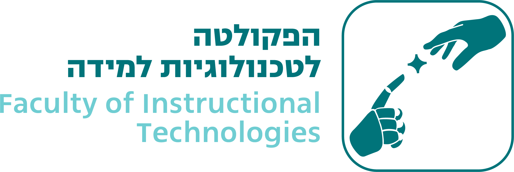
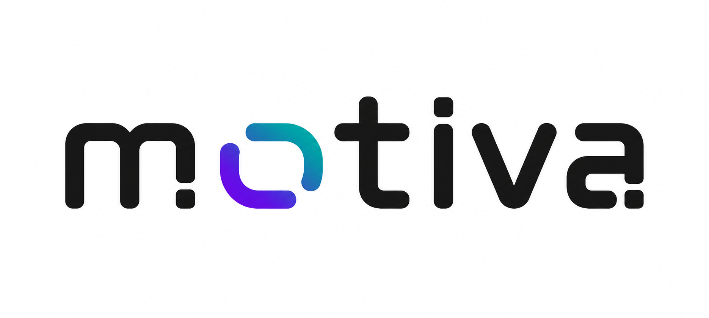

כל פרויקט הגמר. תמונת מצב אחת.
מערכת לניהול וליווי פרויקטי גמר, המרכזת את התהליך ומציגה לכל משתמש את המידע והפעולות הרלוונטיים לו.
הצורך
ניהול פרויקט הגמר מתפרס בין מערכות, קבצים וערוצי תקשורת שונים — ומקשה להבין איפה הפרויקט עומד, מה דורש טיפול ומה השלב הבא.
הפתרון
Motiva מרכזת את שלבי הפרויקט, המשימות, ההגשות והבקשות בסביבת עבודה אחת ומספקת תמונת מצב מותאמת לכל בעל תפקיד.
מנחה
סטודנט.ית
מרצה
הערכת התוצר
בדקנו את Motiva באמצעות התנסות, ראיונות וסקר בקרב סטודנטים ואנשי סגל.
תשובה חיובית = דירוג 4–5 בסולם של 1–5 | כלל המשיבים: n=9, מתוכם 5 סטודנטים